| 日付 | 2025年9月23日（火） |
|---|---|
| 山域 | 富士山周辺 |
| メンバー | 単独 |
| 山行形態 | 日帰り |
| アクセス | 車 |
| ルート (Map) | 富士宮口五合目 (5:54) - (6:24) お中道分岐点 - (7:24) 主杖流し取り付き - (10:37) 富士山 (11:13) - お鉢巡り - (11:58) 富士宮口山頂 (12:10) - (14:01) 富士宮口五合目 |
先週の二ツ塚に登った際に富士山の登山道を調べていたとき、
主杖流しルートというバリエーションルートの存在に気付いた。
富士山の溶岩を伝って剣ヶ峰まで直登するルートだ。
富士山にバリエーションルートが存在するなんて思いもしなかったが
こんなルートが存在するなら登ってみたい。
7月の登山記録が多かったが、雪解け直後より9月の方が落石の危険は低いと思い、
もう9月下旬で寒いが行ってみることにする。
富士宮口五合目の駐車場に車を停める。標高2380m。
シーズンオフでも結構多くの車が停まっている。
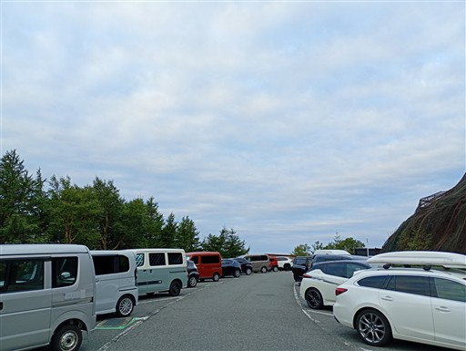
先週の二ツ塚は車を降りた時にものすごく寒かった。
そこより1000m近く標高が高いが、気合（と服装）が違うので、
それほど寒さは感じない。
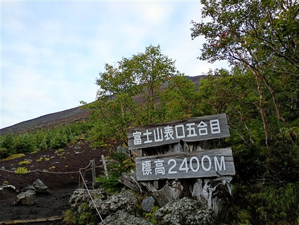
ありがたいことにトイレは開いている。チップ200円。
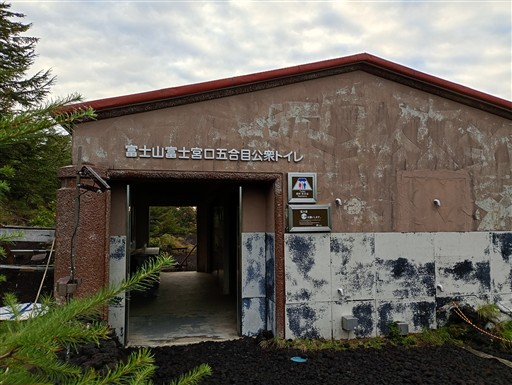
雲は多いがまあまあの空模様。
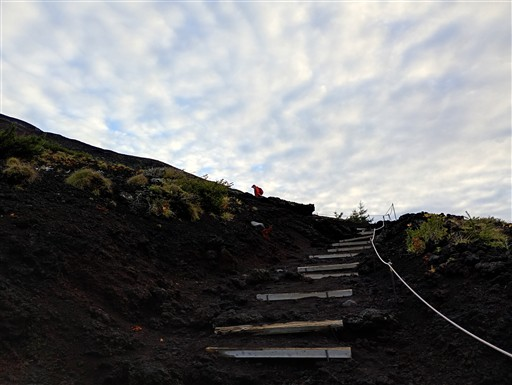
五合目でも素晴らしい展望が広がる。
富士山は中腹でも下界を見下ろす感じで、すごく標高が高く感じる。
近くに山がないからだろうか？

山頂を見上げる。斜面上から眺めると高さがよく分からない。
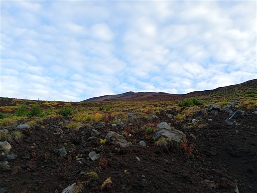
六合目の雲海荘。ここから宝永山へのルートと分かれて富士山への道に入る。
道は閉鎖されているが、脇から入る。
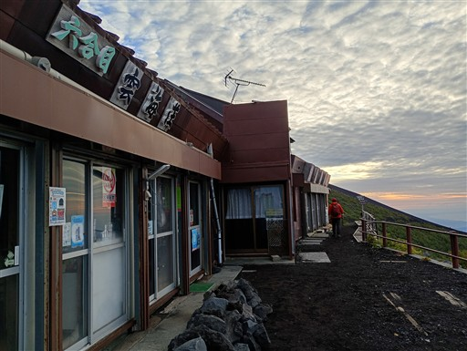
御来光はもう少し前の時間だろうか？でもまだ空がオレンジ色だ。
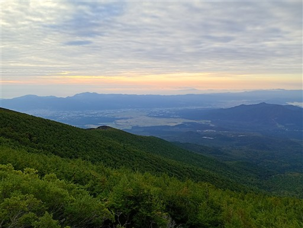
手前に愛鷹山、奥は伊豆半島だ。左手に伊豆大島も見える。
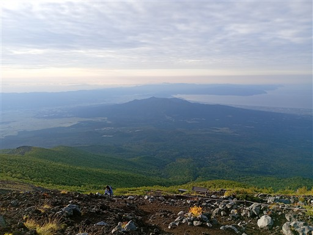
ここからお中道に入る。標識が無く、ロープで塞がれていて、分かりにくい分岐だ。
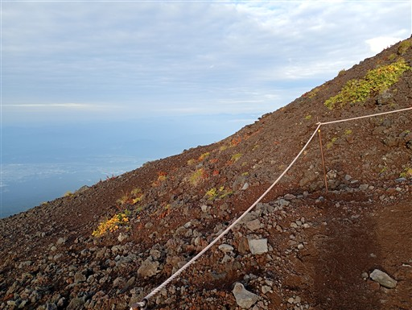
最初はブル道を歩く。
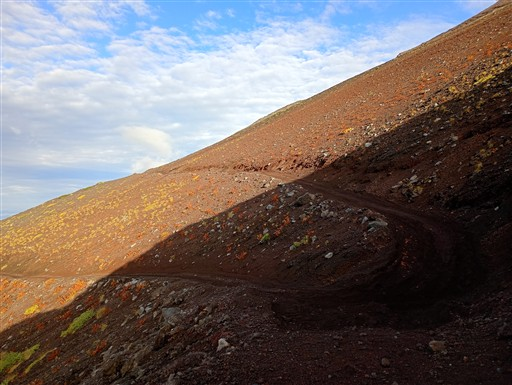
ブル道が折り返した場所で登山道へ。
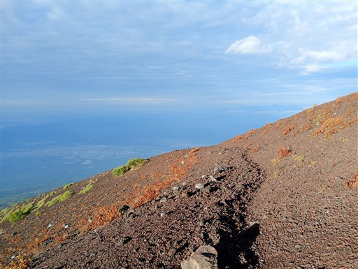
頭上を見ると斜面に石が散在している。落石が起きそうで怖い。
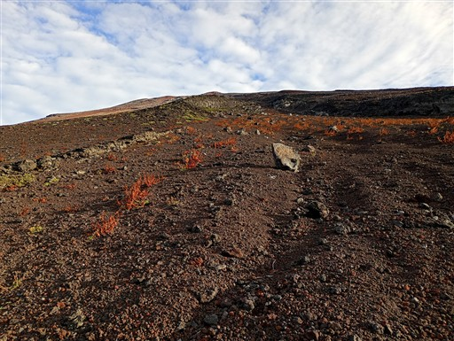
沢を渡るところで先行者に追いつく。
この季節に他にもこのルートを歩いている人がいるとは思わなかった。
挑戦と位置付けている山で他の登山者と出会うと、ちょっと微妙な気持ちになる。
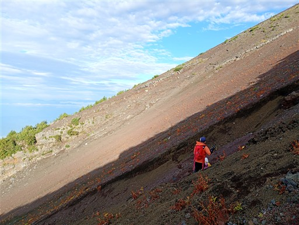
お中道の標識がある。しかしこの道、難易度が高い。
ヤマレコでは通常ルート扱いになっているが、山梨側のお中道とは全く異なる。
登山道の分かりにくさ、砂に埋もれた沢のトラバース、落石の危険など
バリエーションルートに相当する難易度だ。
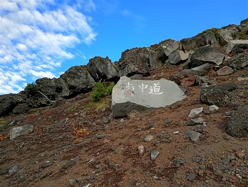
遠くに南アルプスが見えている。
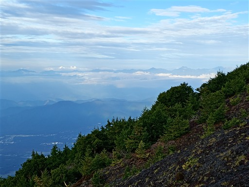
お中道は樹林帯の中に入ってしまう。
木は切られていてルートを示すテープもあるため、ここは迷いにくい。
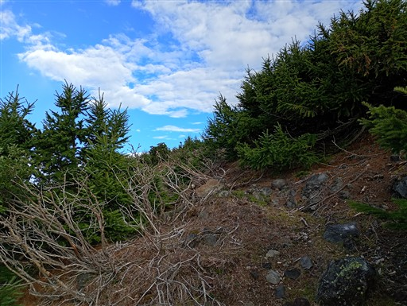
再び砂利ゾーンへ。頭上では大きめの岩が斜面から頭を出している。
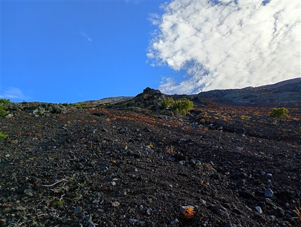
眼下の景色。少し雲が出てきた。
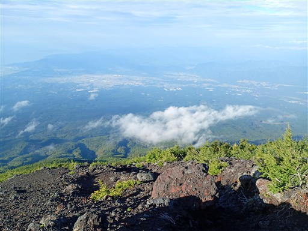
主杖流しに到着。
ここまで水平道をサクッと歩くつもりだったが、思ったより時間がかかってしまった。
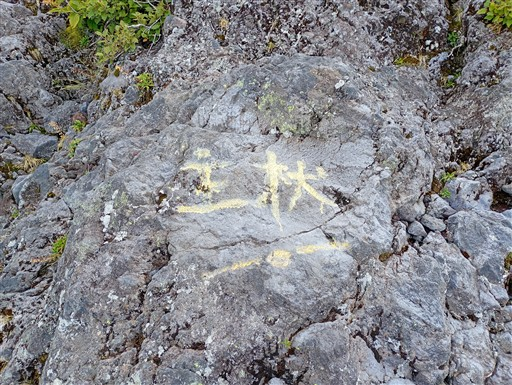
ルートはこのような感じ。岩の上をまっすぐ登っていく。
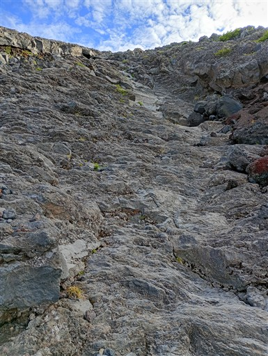
大きな穴を発見。
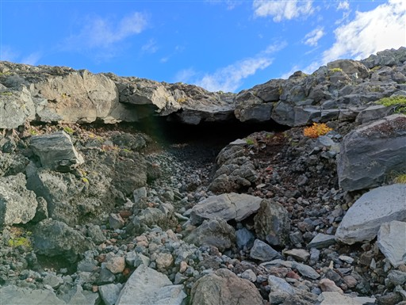
下の方は岩盤が安定していて登りやすい。歩いてきた方を振り返る。
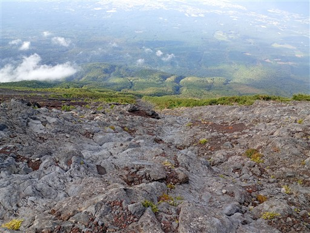
富士山の周りに雲がまとわりついてきた。奥に見えているのは駿河湾。
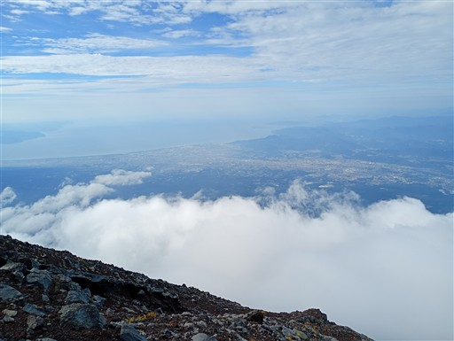
急な岩は手を使って登る。どこを登ろうと自由だ。
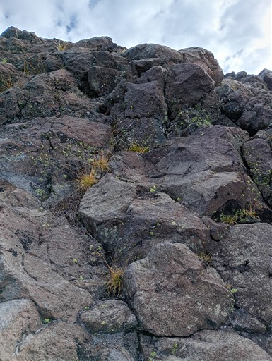
スコリア（小石）地帯は滑って登りにくい。
極力、岩場を選んで登る。
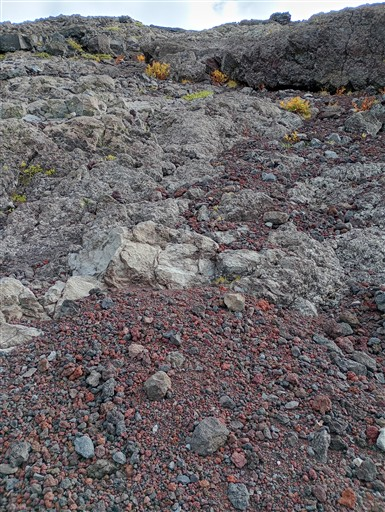
傾斜はこのような感じ。手はつかないで二本足で歩ける程度だ。
しかし、1.7kmで1000mを登る、日本三大急登も真っ青の急登だ。
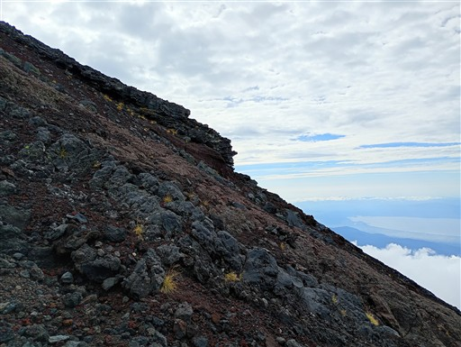
中腹はこのような感じ。ヤマレコの登山ルートより少し左側を歩く。
歩行履歴を見ると、このルートをとる人は結構多いようだ。
右側がどのような状況かは分からないが、こちらのルートは安定している。
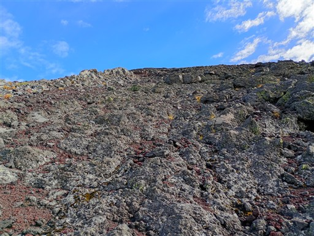
大きな岩で一呼吸。
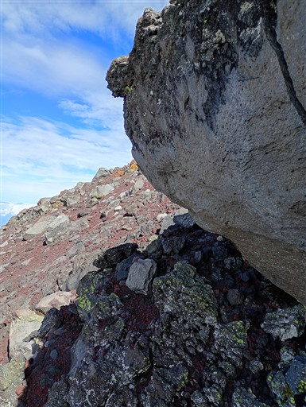
左側は巨大な岩が積み重なっている。あちらには近づかないようにしよう。
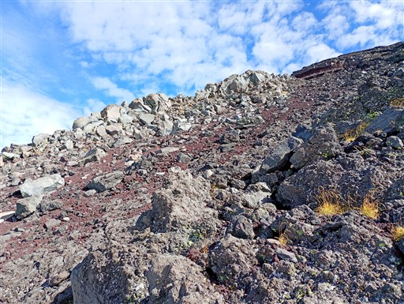
雲が多いが、雲の切れ目から天子山塊が見える。
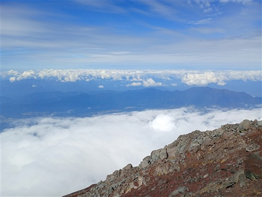
今度は左手に崖が見える。あちらにも近づかないようにしよう。
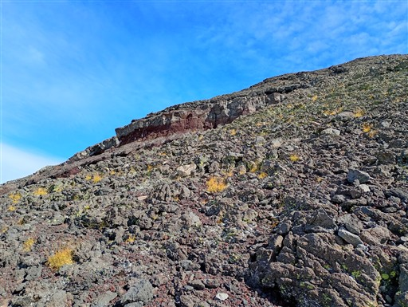
滑り台のように溶岩上を何かが流れた跡。
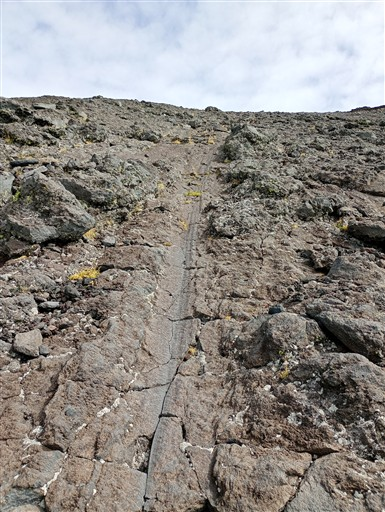
山頂に建つ気象観測所跡が見えてきた。
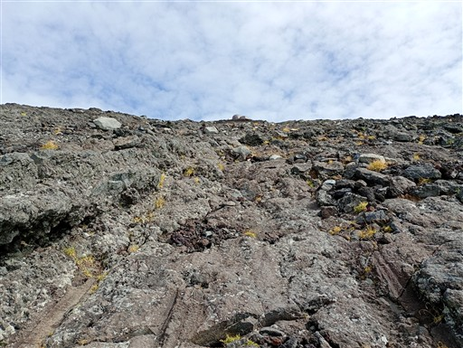
歩いてきた斜面を見下ろす。この辺りは岩の縁を歩く。
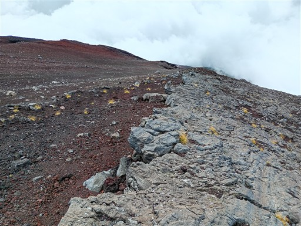
山頂直下のワイヤー。このワイヤーに沿って登る。
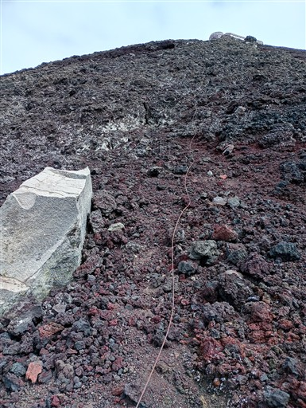
しかし、このワイヤーはスコリア地帯に突入したため左の岩場に逃げる。
空気が薄くて思った以上にきつい。上を向くと頭がフラフラするが、
ルートを探すためには上を向く必要がある。足元がフラフラしても、
滑落する訳にはいかないし、落石を発生させる訳にもいかない。
後続者がいるので相当に気を使う。
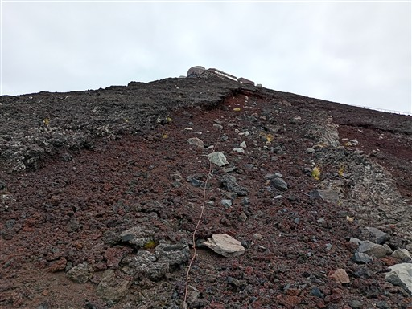
山頂直下になると、ビンの破片などゴミが多くなる。
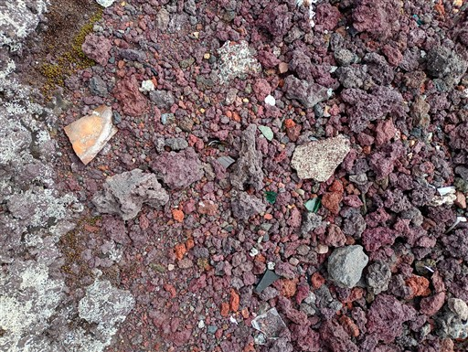
一般登山道の柵が見える。その柵の上部から入ることにする。
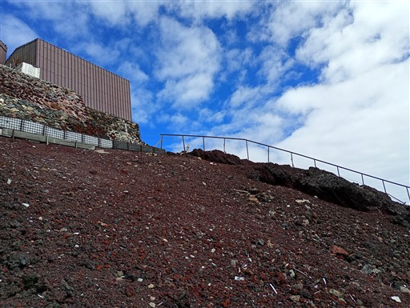
一般登山道に入る。幸い近くに誰もおらず、そっと侵入できた。
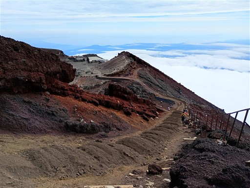
ここから10mほど登ると山頂だ。
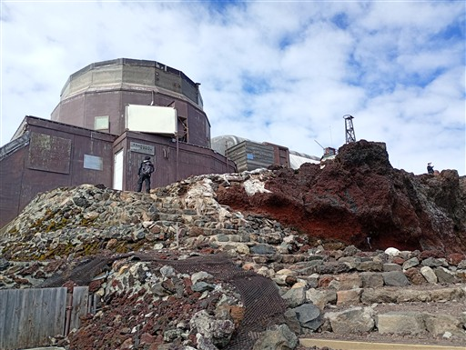
水が張っている場所は表面が凍っている。夜は氷点下だろう。
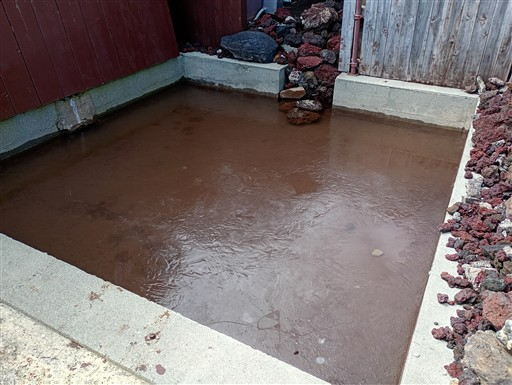
富士山山頂に到着。標高3776m。
24年振りの富士山山頂だ。
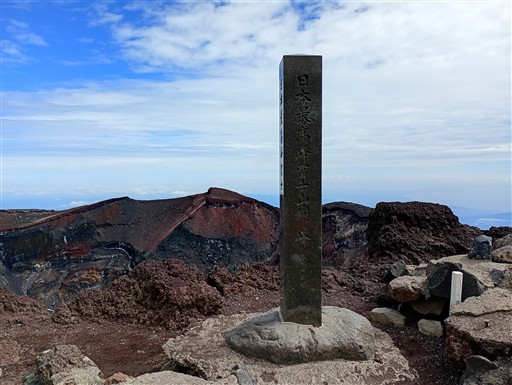
目の前に広がるのは巨大な噴火口。
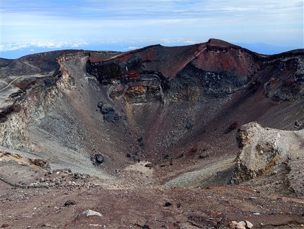
そして噴火口を取り囲むお鉢巡りの道。とにかくスケールが大きい。

山頂で昼食休憩をとる。もう9月なので空いているのがありがたい。風があまり無いのも助かる。
2枚の服を着ていて、4枚のアウターを持ってきたが一度も使わなかった。
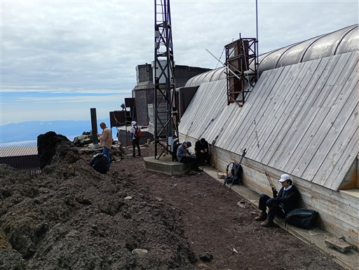
昼食を取ったらお鉢巡り開始。富士宮ルート山頂まで4/5周程度歩く。
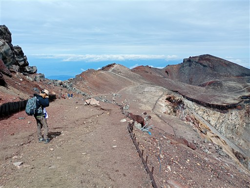
上部から大沢崩れを見下ろす。雲でよく見えないが、富士山の大崩壊地で年々削られている。
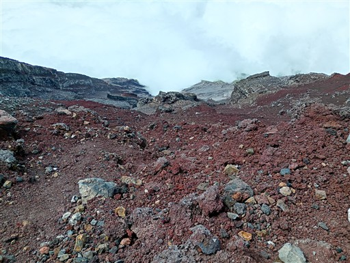
左手に小さな噴火口。お鉢にもう一つ穴があるとは知らなかった。
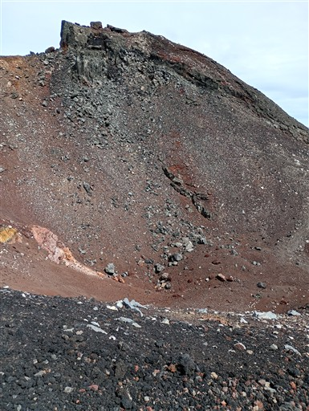
右手が本物のお鉢。
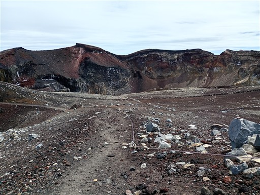
白山岳。剣ヶ峰に次いで2番目の標高だ。
ロープが張られているので、ここは登らずにスルーする。
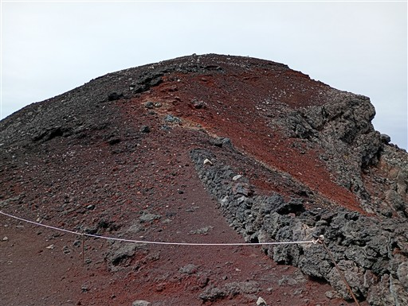
御坂山塊の辺りだろうか？小さすぎてよく分からない。
河口湖周辺は雲の下のようだ。
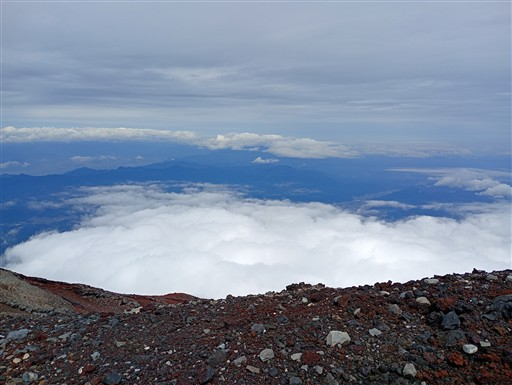
火口縁にある小さな鳥居。久須志神社のものだろう。
対岸に見えるのが剣ヶ峰だ。
吉田口山頂に到着。
ここにあるのは久須志神社。もう閉まっている。

お鉢巡りを続ける。
こちらは東側の展望。正面は箱根の山々で芦ノ湖がわずかに見えている。
火口の縁には、なぜか大量のつららが発達している。
赤い岩や砂が広がる中で、割れた石の断面は真っ白だ。
ラピュタに出てくる飛行石みたい。
富士宮口山頂に到着。こちらにあるのは富士山本宮浅間大社奥宮だ。
こちらも閉まっている。
目の前の剣ヶ峰まで行けば一周なのだが、ここが富士宮口の下山地点なので
お鉢巡りはここまでとする。ここでおやつ休憩を取ったら出発する。
こちらの登山道にも入口の所に鳥居がある。

下山道には定期的に山小屋が存在するが、もちろん全て閉まっている。
重機が活動している。ブル道の整備だろうか？
七合目辺りで雲の中に突入。
無事下山。
今回歩いた主杖流しルートは難しいルートだった。
特別に困難な場所があった訳ではないが、安全に歩くには登山経験が必要だ。
ルートとしては素晴らしく、広大な斜面を自由に歩き、日本最高峰に立つという楽しい体験ができた。